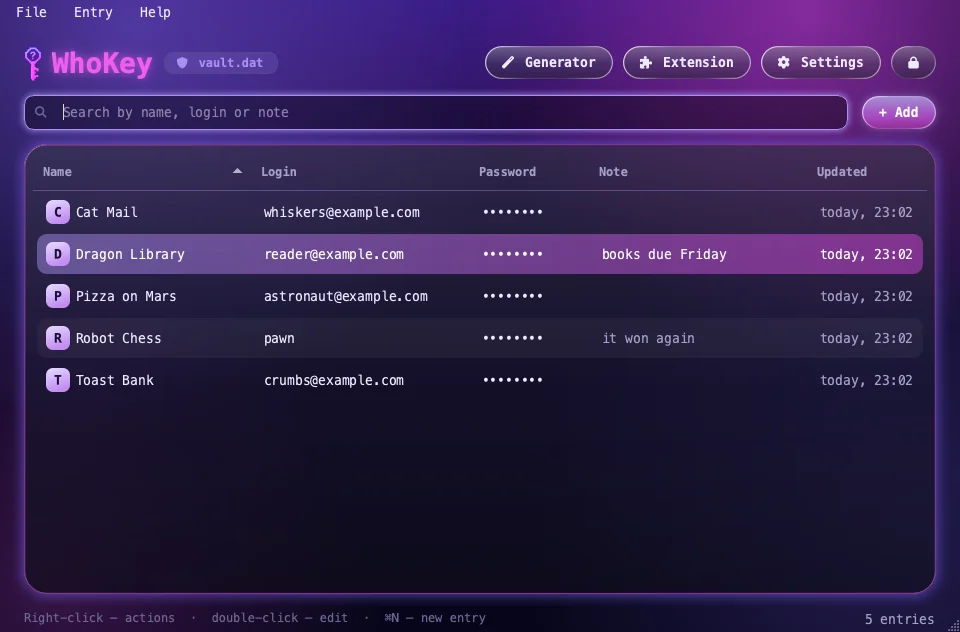

Путь по умолчанию. Другой файл можно выбрать в окне входа.The default path. You can pick another file in the login window.
вводinput
ключkey
шифрованиеencryption
файлfile
WhoKey
Менеджер паролей для macOS, Windows и Linux. Логины и пароли лежат в одном зашифрованном файле. Открыть его можно только мастер-паролем.A password manager for macOS, Windows and Linux. All your logins live in one encrypted file that only opens with your master password.
↓Листайте, чтобы увидеть, как он работаетScroll to see how it works(со звуком интереснее)(better with sound)
Любительский проект, весь код написал ИИ. Профессиональной проверки безопасности не было. Что это значитA hobby project, all code written by AI. No professional security audit. What that means
01
Вы вводите мастер-парольYou type your master password
В окне видны только точки. Пароль для примера страница придумала сама: полей ввода здесь нет, и настоящий пароль сюда вводить некуда.The window shows only dots. The page made up this example password itself: there are no input fields here, so there is nowhere to type a real one.
Пример:Example:пельмени-42zebra-tuba-7
Со страницы ничего не уходит: её правила (CSP в начале исходного кода) разрешают только загрузку собственных файлов.Nothing leaves the page: its rules (the CSP at the top of the source) only allow loading its own files.
02
Argon2id превращает его в ключArgon2id turns it into a key
Функция специально медленная и требует много памяти: каждый новый блок зависит от прежних. Поэтому каждая попытка подобрать пароль стоит времени и памяти.The function is slow and memory-hungry on purpose: each new block depends on earlier ones. That makes every guess at a password expensive.
Клетка здесь — настоящий блок памяти, линия — настоящая ссылка на блок. Здесь для наглядности 1 МиБ и 3 прохода; в приложении настройки другие, они в vault.py.Each cell is a real memory block, each line a real reference to one. This demo uses 1 MiB and 3 passes; the app uses other settings, see vault.py.
Пример, посчитан заранее. Ключ:An example computed in advance. The key:Посчитано только что. Ключ:Computed just now. The key:c2af07e7af3a33aa85ac27277aaff68d77831aa3238c69eb89d887dcfce1375eac6d71f5df7c7ae31f877711d4ea217ebdb7e0ce95d181481b11b334d2639103
03
Fernet шифрует записиFernet encrypts the entries
Ключом шифруется то, что вы храните: логин, пароль, заметка. Каждая светящаяся точка — настоящий бит результата шифрования.The key encrypts what you store: login, password, note. Every glowing dot is a real bit of the encrypted result.
Пример, зашифрован заранее:An example encrypted in advance:Зашифровано только что:Encrypted just now:gAAAAABq72tEcvDUtoOiBG2A8v3PhvT3UI8D1qIffXIea0vwGJNBOU1BKj2M4svd44NqibgmrCdQvB5EwUm9WP6UyqT1XrjXVn4GPTnuQP8WkI5-76M7_Jz3vUxQAntgYhbsvm_a35KE0sOQ1FRPqQfCE8mtRl4KDl24oMnFF2ruILNKo0Qniao=gAAAAABq74J0f3fOM1Jc5NOv8Tb4whmMkIAktss221g1RFA9whZZMuBvoQAwetfSq2y8qBOBIXPkj4tT-FMVGff6snDXQcQsW0jcVTSCZN5FAyPjXeaVEHmypDGPTu-gEXREFEMB4rkJKkNm1IMvXw2NdfvSa561xw==
04
И всё лежит в одном файлеAnd it all sits in one file
Рядом лежит скрытая резервная копия, так что в папке виден один файл. Сам файл можно хранить на флешке или в облаке: откроется только мастер-паролем.A hidden backup sits next to it, so you only see one file. The file itself can live on a USB stick or in the cloud: it opens only with your master password.
Та же основа, тот же Argon2id, другой символ в пароле. Ключ получается совсем другим, подпись Fernet не совпадает, и файл не открывается. Если мастер-пароль забыт, случится то же: восстановить его нельзя.The same base, the same Argon2id, one different character. The key comes out completely different, the Fernet signature fails, and the file stays shut. A forgotten master password ends the same way: it cannot be recovered.
Подпись совпала, файл открылся.Signature matches, the file opens.
один символ другойone character offпельмени-43zebra-tuba-84cecde74f82275621c39978bdedccb2c4939148b1caa68260ce83bfab1d8d702acbf639c93fbe472d225c1cd2e66d6e180e5a9ba90e4e96dfa585cf7db1baa63
Подпись не совпала, файл не открылся.Signature doesn't match, the file stays shut.
Разных битов ключа: 118 из 256. Пример посчитан заранее.123 of 256 key bits differ. An example computed in advance.
Что умеет WhoKeyWhat WhoKey can do

Буфер обменаClipboard
Скопированный пароль стирается через 30 секунд (меняется в настройках) и при выходе. Полоска показывает, сколько осталось.A copied password is wiped after 30 seconds (changeable in Settings) and on quit. A bar shows the time left.
РасширениеExtension
Для браузеров на Chromium. Заполняет только по нажатию, только на сайте из записи и его поддоменах, только на https (и на localhost).For Chromium browsers. Fills only on click, only on the entry's own site and subdomains, only on https (and localhost).
ГенераторGenerator
Длина, буквы, цифры, символы и примерная шкала надёжности.Length, letters, digits, symbols and a rough strength meter.
АвтоблокировкаAuto-lock
Когда блокируется экран, засыпает компьютер или WhoKey долго не трогают (по умолчанию 10 минут). На Mac можно открывать по Touch ID.When the screen locks, the computer sleeps or the app sits idle (10 minutes by default). On a Mac it can unlock with Touch ID.
Импорт и экспортImport and export
CSV из браузера, Bitwarden, KeePassXC или 1Password и обратно. CSV не зашифрован, после переноса удалите его.CSV from a browser, Bitwarden, KeePassXC or 1Password and back. The CSV is not encrypted, so delete it after the move.
Скрытые паролиHidden passwords
Показанный пароль сам прячется через 15 секунд. Интерфейс на русском и английском.A revealed password hides itself after 15 seconds. The interface is in English and Russian.
macOS, Windows, Linux и расширениеmacOS, Windows, Linux and the extension
Перетащите WhoKey в «Программы». Приложение не заверено Apple, поэтому первый запуск будет заблокирован: «Системные настройки → Конфиденциальность и безопасность → Всё равно открыть».Drag WhoKey into Applications. The app is not notarized by Apple, so the first launch is blocked: System Settings → Privacy & Security → Open Anyway.
Права администратора не нужны. Установщик не подписан, поэтому SmartScreen может предупредить: «Подробнее → Выполнить в любом случае».No administrator rights needed. The installer is not code-signed, so SmartScreen may warn you: More info → Run anyway.
Ubuntu 22.04, Debian 12, Fedora 36, Arch и новее. Распакуйте и запустите WhoKey/install.sh, права администратора не нужны.Ubuntu 22.04, Debian 12, Fedora 36, Arch and newer. Unpack and run WhoKey/install.sh, no administrator rights needed.
Сначала установите WhoKey и откройте его. Затем распакуйте архив, включите «Режим разработчика» в chrome://extensions и нажмите «Загрузить распакованное».Install WhoKey and open it first. Then unzip, turn on Developer mode in chrome://extensions and click Load unpacked.
Что важно знать перед установкойWhat to know before you install
Это любительская программа.This is a hobby app.Весь код написал ИИ. Профессиональной проверки безопасности она не проходила. Для важных аккаунтов надёжнее проверенные менеджеры, например Bitwarden или KeePassXC.All the code was written by AI. The app has not had a professional security audit. For important accounts, an established manager such as Bitwarden or KeePassXC is a safer choice.
Установщики не подписаны.The installers are not code-signed.macOS заблокирует первый запуск, а Windows SmartScreen может показать предупреждение. Что нажать, написано рядом со ссылками выше.macOS blocks the first launch, and Windows SmartScreen may warn you. What to click is written next to the links above.
Мастер-пароль нельзя восстановить.The master password cannot be recovered.Забыли его — хранилище не открыть.If you forget it, the vault is gone.
От вируса на компьютере полностью не защитит.WhoKey can't fully stop malware on your computer.Ни один менеджер паролей не защищает полностью от программы, уже запущенной под вашим пользователем. WhoKey усложняет ей жизнь, но не более.No password manager can fully protect you from malware already running under your user account. WhoKey only makes its job harder.
Touch ID— для удобства: ключ лежит в Связке ключей, а отпечаток проверяет сам WhoKey. Вредоносная программа, запущенная под вашим пользователем, может получить ключ без отпечатка. Если это беспокоит, не включайте Touch ID.is a convenience: the key sits in your login Keychain and WhoKey itself checks the fingerprint. Malware running under your user account could get the key without a fingerprint. If that worries you, keep it off.
Расширению нужен доступ ко всем сайтам,The extension needs access to all websitesчтобы показывать значок в полях входа. Chrome так и напишет. Ставьте его только из репозитория WhoKey на GitHub.to show its icon in login fields, and Chrome will say so. Install it only from the WhoKey repository on GitHub.
Эта страницаThis pageне загружает чужие скрипты, шрифты и аналитику и не ставит cookie. Её расчёты — демонстрация с облегчёнными настройками, а не код приложения.loads no third-party scripts, fonts or analytics and sets no cookies. Its calculations are a demo with lighter settings, not the app's code.